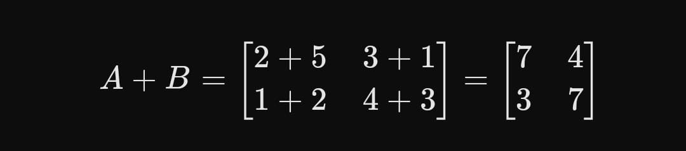

Matriks
Dikembangkan Bersama oleh :
- Dewa Made Angga Wibawa (2)
- I Gusti Komang Krisna Aditya (6)
- I Gusti Ngurah Nararya Bayu Pramana(8)
- I Kadek Arditya Putra (10)
- Ni Putu Nanda Suryaningsih (32)
Matriks adalah susunan bilangan-bilangan dalam bentuk baris dan kolom yang membentuk persegi panjang atau persegi, yang digunakan untuk mewakili data atau nilai dalam bentuk yang terstruktur. Setiap elemen dalam matriks memiliki posisi tertentu berdasarkan nomor baris dan kolomnya. Secara matematis, matriks dinotasikan dengan huruf kapital (misalnya, , , atau ), dan elemen-elemennya dapat diidentifikasi dengan notasi dua indeks. Sebagai contoh, matriks 2x3 (2 baris dan 3 kolom) dapat ditulis sebagai :
Dalam matriks ini, ada dua baris dan tiga kolom, dengan elemen-elemen yang berisi angka-angka dari 1 hingga 6.
Matriks dengan satu baris dan beberapa kolom, ditulis sebagai 1 × n. Seperti :
Matriks dengan satu kolom dan beberapa baris, ditulis sebagai m x1. Seperti :
Matriks dengan jumlah baris sama dengan jumlah kolom, ditulis sebagai n × n. Contohnya adalah matriks identitas yang memiliki elemen diagonal bernilai satu dan lainnya nol. Seperti :
Matriks persegi di mana semua elemen non-diagonal bernilai nol. Seperti :
Matriks diagonal khusus dengan elemen diagonal utama bernilai satu. Seperti :
Semua elemen dalam matriks bernilai nol. Seperti :
Matriks yang sama dengan transposenya, artinya A = A^T. Seperti :
Menambahkan atau mengurangi elemen-elemen yang seletak pada dua matriks dengan ukuran sama.
Mengalikan setiap elemen dalam matriks dengan sebuah bilangan.
Mengalikan baris matriks pertama dengan kolom matriks kedua secara berurutan lalu jumlahkan hasilnya.
Menukar posisi baris dan kolom pada suatu matriks.
kita hanya perlu :
Penjumlahan matriks dilakukan dengan menambahkan elemen-elemen yang sesuai pada posisi yang sama. Seperti :
Pengurangan matriks dilakukan dengan mengurangkan elemen-elemen yang sesuai pada posisi yang sama. Seperti :
Perkalian skalar dilakukan dengan mengalikan setiap elemen matriks dengan angka skalar (dalam hal ini 3). Seperti :
Untuk perkalian matriks, kita menggunakan aturan berikut: elemen di baris pertama dan kolom pertama dari hasil perkalian diperoleh dengan menjumlahkan hasil kali elemen-elemen di baris pertama matriks pertama dengan elemen-elemen di kolom pertama matriks kedua, dan seterusnya. Seperti :
Baris 1, Kolom 1:
Baris 1, Kolom 2:
Baris 2, Kolom 1:
Baris 2, Kolom 2: